パソコンに接続できる機器について学ぼう
様々な機器を接続し、必要に応じて機能を拡張できるのがパソコンの強みです。機器・装置のことをデバイスともいいます。
どのようなデバイスが接続できるのか、どうやって接続するのかについて見ていきましょう。
今回はたくさんの内容が出てきますが、すべて覚える必要はありません。「図鑑」のようにとらえて、気楽に眺めましょう。
まずは一通り読んでみて、実際に機器を接続するときに迷ったら再び読むとよいでしょう。
接続できるデバイスを見てみよう
//TODO ちょっと図鑑っぽい感じにしたい
マウス・キーボード
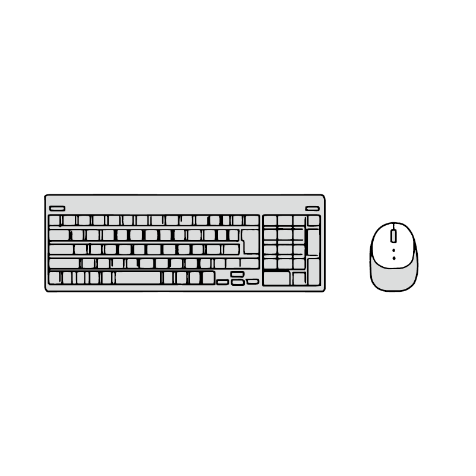パソコンの操作に必須のマウスやキーボードもデバイスの一例です。
ノートパソコンにはキーボードやトラックパッドが装備されているので追加する必要はありませんが、キーボードやマウスにこだわりがある場合は外付けのキーボードを使うことも可能です。
ディスプレイ
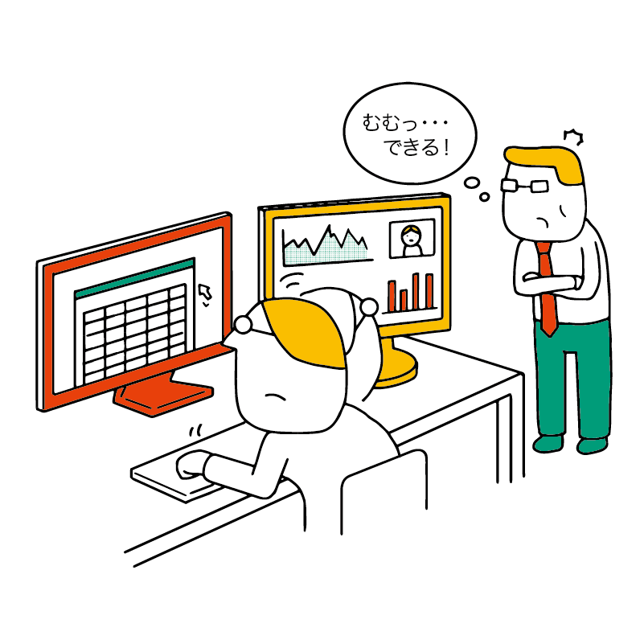ディスプレイとは画面のことです。モニターとも言われます。皆さんがお使いのパソコンにも標準で 1 台は装備・接続されています。
より広い画面を使いたい場合はディスプレイを追加し、デュアルディスプレイ（2枚）やトリプルディスプレイ（3枚）にするとよいでしょう。
見た目はテレビにも似ていますが、テレビのような「電波を受信する装置」を備えていないのが特徴です。
外付けストレージ
外付けストレージは、パソコンのストレージ容量を手軽に拡張するためのデバイスです。
USB メモリなど、パソコンの記録領域を拡張したり人にデータを渡したりするときに便利なデバイスがあります。
また、外付け HDD や外付け SSD などもあります。USB メモリよりサイズが大きいですが、その分だけ容量も大きくなっています。
Web カメラ・マイク
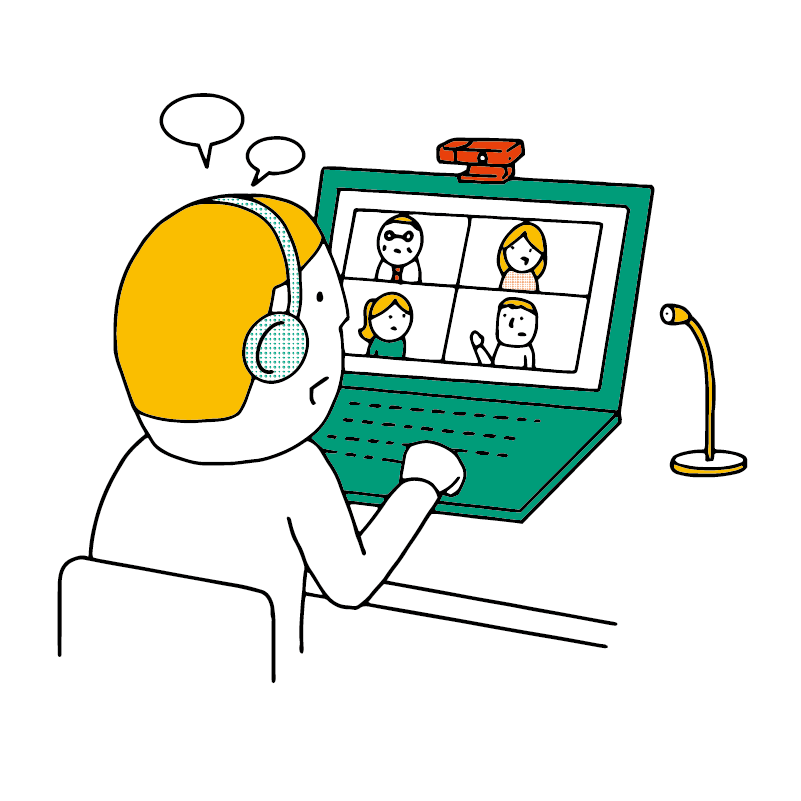Web カメラはビデオチャットなどに使います。スマホにおける「インカメラ」のような役割です。
ノートパソコンであれば内蔵されていることも多いです。
マイクは音声をパソコンに取り込むものです。ノートパソコンであれば内蔵されているものが多いようです。また、Web カメラとマイクが一体化した製品もあります。
マイクはビデオチャット用の低価格のものもあれば、音楽用のような高級品もあります。用途に応じて選ぶとよいでしょう。
CD・DVD・ブルーレイドライブ
CD や DVD、ブルーレイといったディスクを読み込んだり書き込んだりするためのデバイスもあります。
以前のパソコンには標準で装備されてたのですが、近年は CD や DVD を使う機会が減った上に、パソコンの薄型化の邪魔になってしまうこともあり、内蔵しているパソコンはあまり多くありません。
そのため、最近は「外付けドライブ」を使うのが主流です。
メモリーカードリーダー
一眼レフカメラやアクションカメラ、ドローンなどは SD カード や microSD カード といった メモリーカード に写真や動画を記録します。
それをパソコンに読み込むためのデバイスがメモリーカードリーダーです。
ペンタブレット
//TODO 抽象イラスト: ペンタブレットでイラストを描く人
イラストを描く際などに利用するデバイスです。繊細な動きや筆圧などを反映できます。
プロジェクター
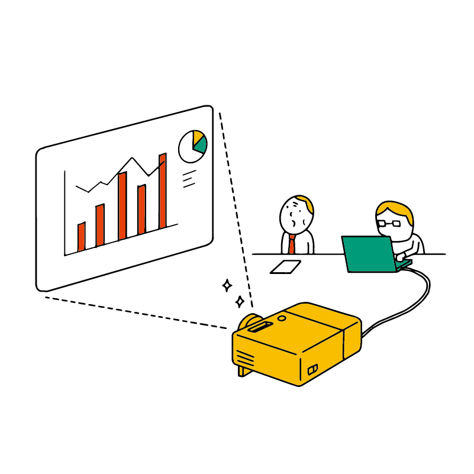画面を壁や大きなスクリーンに投影するためのデバイスです。パソコンからはディスプレイの一種として認識されます。
主に学校や企業で、授業やプレゼンテーションの際に使われます。
VR 機器
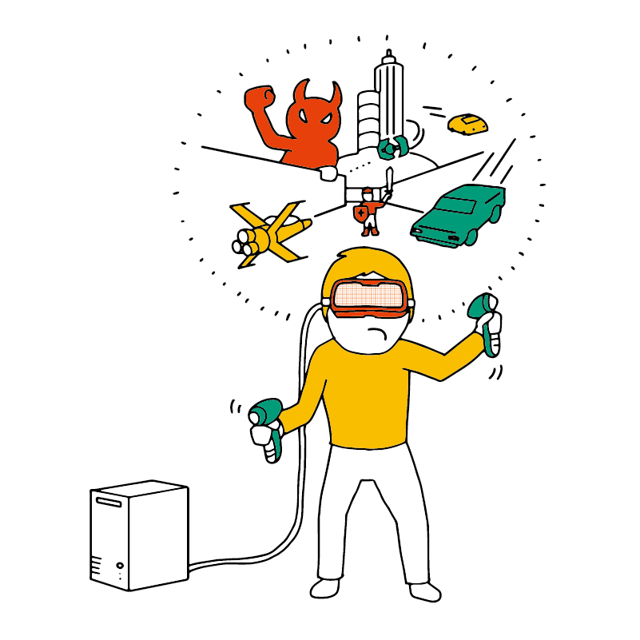高性能なパソコンにはバーチャルリアリティ（VR）用の機器を接続できます。
パソコン不要で楽しめる VR 機器もありますが、高性能なパソコンと VR 機器を組み合わせることで、より高品質なグラフィックが楽しめたり、VR ゲームの開発が行えるようになったりします。
ゲーム用コントローラー
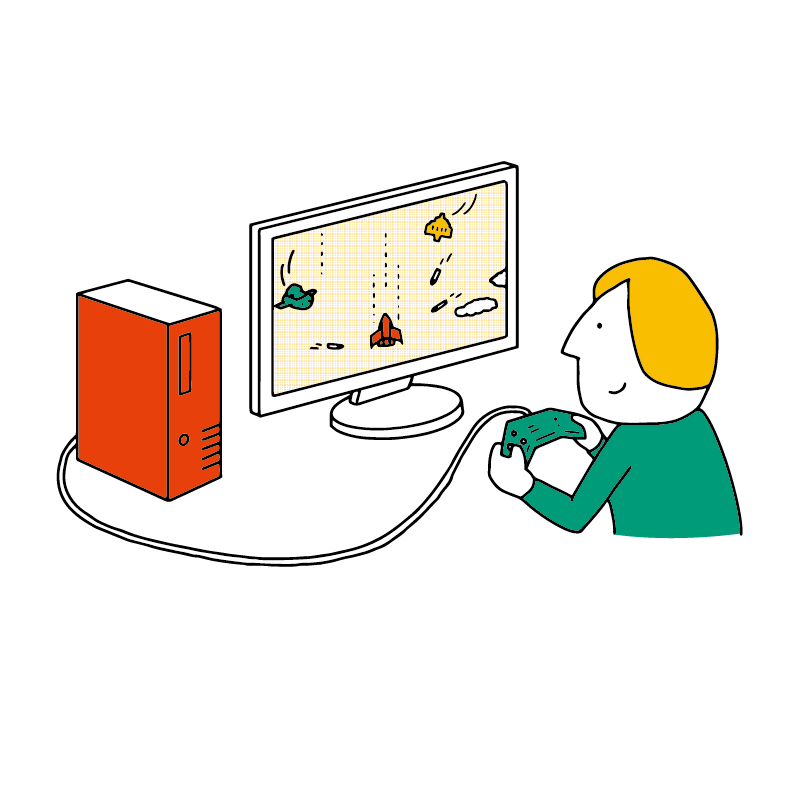パソコンでゲームを快適にプレイするためのデバイスです。
家庭用ゲーム機やアーケードゲーム機のような専用コントローラーを接続し、対応したゲームをプレイできます。
キャプチャボード
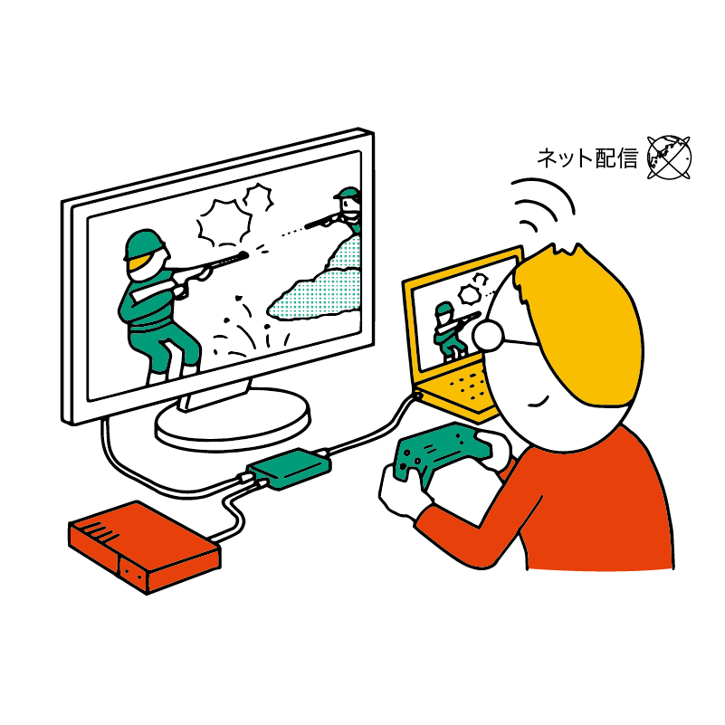ゲーム機などから出力される映像をパソコンに取り込むデバイスです。
いわゆる「実況プレイ」のような動画配信などに使われます。
プリンター・スキャナー
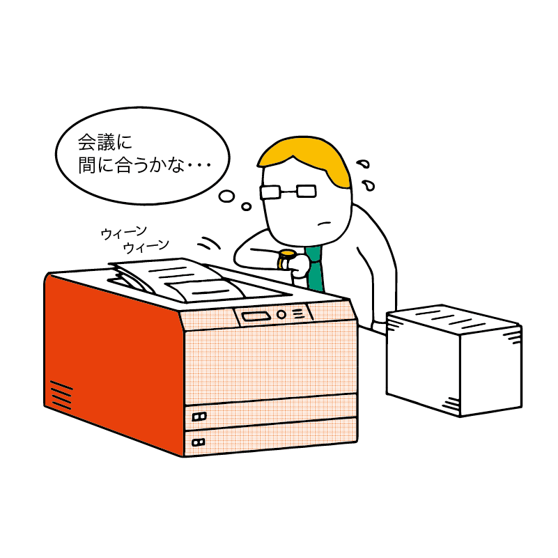プリンター はデータを紙に印刷できるデバイスです。
スキャナー は紙を読み取って、パソコンに画像として取り込むためのデバイスです。
プリンターとスキャナー、コピー機の機能などを 1 台にまとめたものを複合機（ふくごうき）といいます。
音楽用キーボード
文字を入力するのではなく、音楽を演奏するためのキーボードもパソコンに接続できる場合があります。
パソコンを使って作曲する場合などに活用できます。
産業用機器
企業などで利用される専門的な機械も、パソコンに接続して使用するものが多数あります。
デバイスとパソコンを接続する方法（規格・端子）
デバイスを使うには、パソコンとデバイスを接続しなければいけません。
有線か無線か、有線ならどの手段を使うかなど、接続手段には様々な種類があります。
様々なデバイスに用いられるもの
USB
USB（ユーエスビー）はUniversal Serial Bus （ユニバーサル・シリアル・バス）の略です。
多くのデバイスが USB によってパソコンと接続できます。
USBにはいくつか種類があり、ちょっと複雑なため、のちほど詳しく説明します。
Thunderbolt
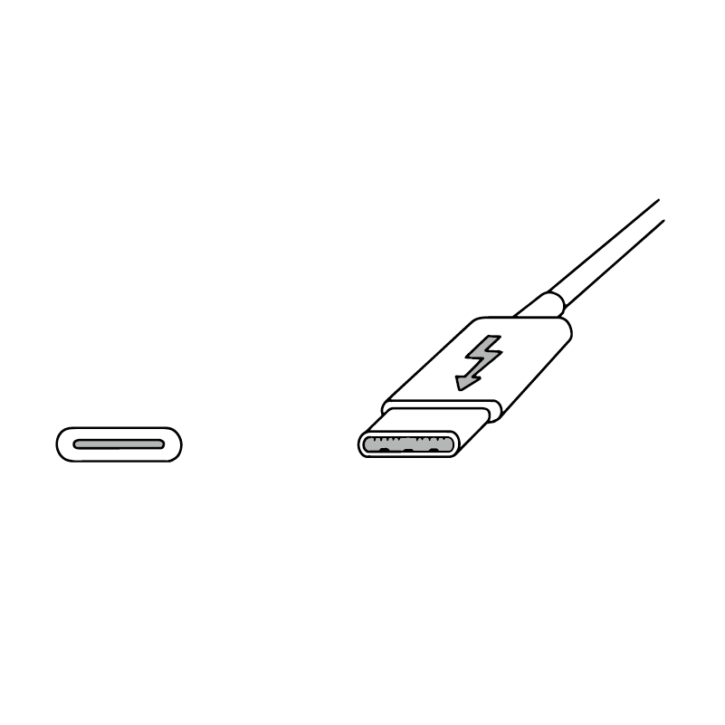Thunderbolt（サンダーボルト） は Mac など一部のパソコンに搭載されている端子です。雷のようなマークが描かれていることがあります。
最近用いられているものは Thunderbolt 3（サンダーボルト・スリー）です。
Thunderbolt 3 は「USB Type-C」と同じ端子を採用しています。そのため、パソコンの Thunderbolt 端子に USB Type-C のデバイスを接続できます。
しかし、逆に通常の USB Type-C の端子を Thunderbolt として扱うことはできません。なぜなら、Thunderbolt のほうが高性能であり、通常の USB ではこれに追いつけないためです。
音声の通信に用いられるもの
音声端子
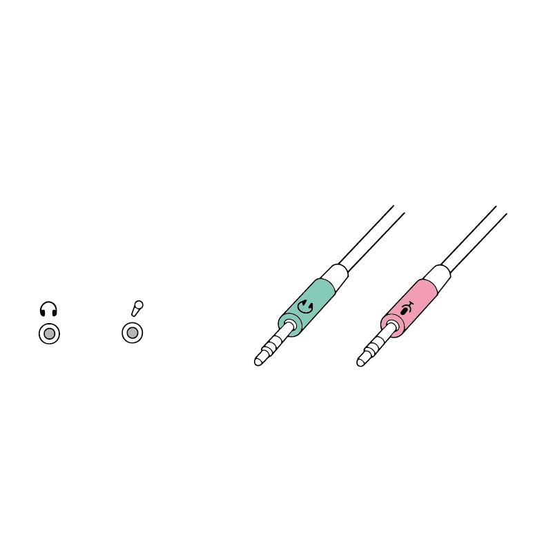音声に関する機器を接続する端子です。パソコンに装備されているものは一般的に直径が 3.5 mm の端子で、「（オーディオ）ミニプラグ」などとも言われます。
ヘッドホン・イヤホン・スピーカーといった 再生機器 と、マイク（録音機器）で形状が同じです。挿し間違えないように気をつけましょう。
多くの場合はヘッドホンやマイクのアイコンが描かれており、どちらの端子か分かるようになっています。また、ヘッドホンは緑色、マイクはピンクのように色分けされているものもあります。
画面・映像の通信に用いられるもの
HDMI
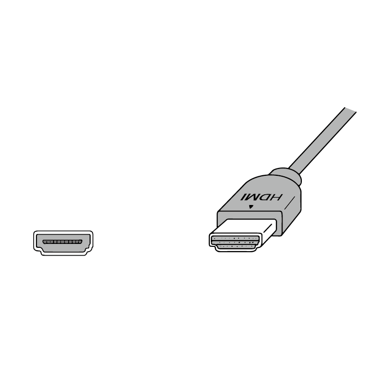HDMI（エイチ・ディー・エム・アイ）は動画と音声を同時に転送する規格です。テレビやゲーム機などでも利用されています。
パソコンに装備されているのは HDMI の 出力 端子で、パソコンが出力する映像を別の画面やプロジェクターなどで見るためのものです。ゲーム機などから出力される映像をパソコンに入力する（取り込む）場合は「キャプチャボード」と呼ばれるデバイスが必要です。
ちなみに、High-Definition Multimedia Interface（ハイ・デフィニション・マルチメディア・インターフェイス）の略で、「高精細度マルチメディアインターフェース」という意味ですが覚える必要はありません。
Display Port / Mini DisplayPort
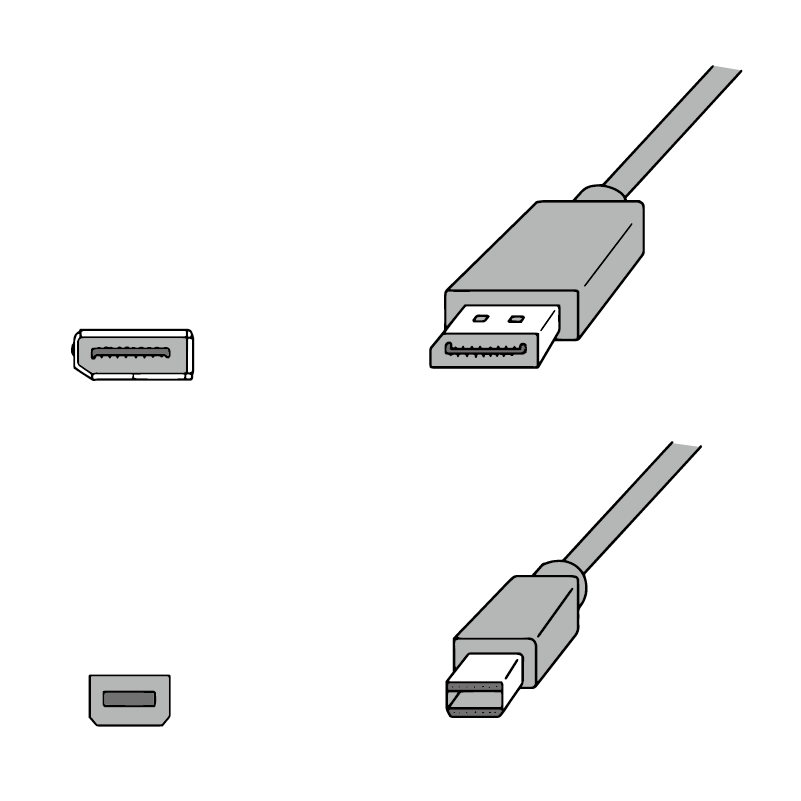Display Port（ディスプレイ・ポート）は映像を転送するための規格です。DPと略されることもあります。
HDMI と形状が似ているので要注意です。
なお、ノートパソコン向けに省スペースな Mini DisplayPort（ミニ・ディスプレイ・ポート、Mini DP）と呼ばれる端子もあります。
一般的なテレビやゲーム機などではあまり採用されておらず、どちらかというと業務用やプロ向けの機器で使われる端子です。
たとえば、一部の VR 機器は DisplayPort を採用しているものもあります。
D-Sub 15（VGA）
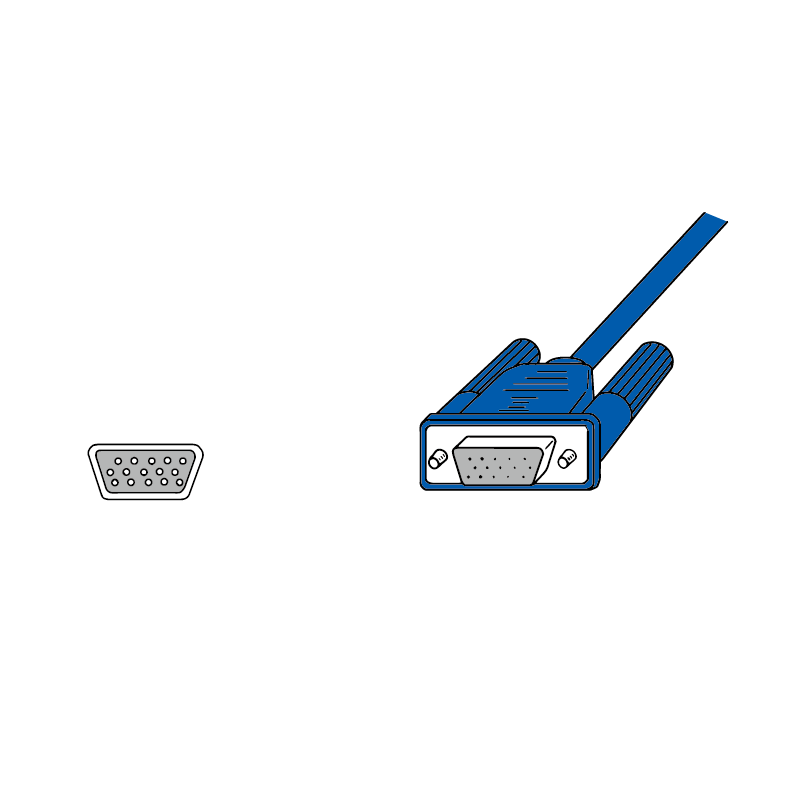D-Sub 15（ディー・サブ） あるいは VGA（ブイ・ジー・エー）は映像を転送するための端子です。アナログRGB端子と呼ばれることもあります。
古い規格なので高画質の映像を転送することはできませんが、古いプロジェクター等ではまだ使われることがあります。
（参考）DVI
DVI（ディー・ブイ・アイ）は、VGA（D-Sub 15）よりは新しいものの、 HDMI よりは古い規格です。「D-Sub」と似た名前ですが、別の規格です。
主にデスクトップパソコンとディスプレイを接続する際に用いられていましたが、近年は HDMI に置き換わりつつあります。
端子が大きいため、ノートパソコンにはほとんど搭載されていません。
ネットワークの通信に用いられるもの
LAN端子
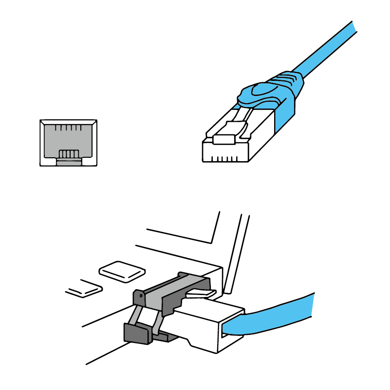LAN（ラン）端子 は Wi-Fi ではなく有線でネットワークに接続するときに使う端子です。
多くの場合は有線よりも Wi-Fi のほうが便利ですが、より高速で安定した通信が必要な場合に有線 LAN は利用されます。
端子が大きいため、最近のノートパソコンでは薄型化のために折りたたみ式の LAN 端子を採用しているものもあります。
LAN ケーブルには「カテゴリ」とよばれる分類があり、カテゴリによって転送速度が違います。
LAN ケーブルのカテゴリ
家電量販店で LAN ケーブルの売り場に行くと、「CAT 7」のような表記を見かけます。CAT は カテゴリ（category）の略です。
一般的に、カテゴリの数字が大きいほど高速な通信に対応しています。
- カテゴリ5e : 1 Gbps
- カテゴリ6 : 1 Gbps（5eより安定）
- カテゴリ6A : 10 Gbps
- カテゴリ7 : 10 Gbps（6Aより安定）
- カテゴリ8 : 40 Gbps
ただし、LAN ケーブルの速度だけでなく、パソコンやネットワークの機械がすべて対応していないとその通信速度を出せません。
つまり、パソコンが 1Gbps にしか対応していないなら、カテゴリ 8 のケーブルを買っても 1Gbps の速度しか出ず、あまり意味がありません。
普通に使うのであれば カテゴリ6 や カテゴリ6A を買っておけば十分と言えます。
なぜなら、2021年現在のパソコンやネットワークの主流は 1Gbps であり、10Gbps 以上はほとんど業務用のものしか存在しないからです。
無線接続
Bluetooth
Bluetooth（ブルートゥース）は、スマホなどでも活用されている無線接続の規格です。
近年のノートパソコンは Bluetooth に対応している機種も多いです。対応していれば イヤホン・ヘッドフォン・キーボード・マウスなどを無線で接続できます。
Bluetooth は英語で「青い歯」という意味ですが、これは 10 世紀にデンマークとノルウェーを話し合いによって平和的に統一したハーラル1世（通称「青歯王」）にちなんでいます。
「複数の規格を作ってメーカー同士で争うのではなく、Bluetooth で平和的に統一しよう」といった願いが込められた名前だと言われています。
米印と「B」が組み合わさったような Bluetooth のロゴマークですが、これは当時使われていた「ルーン文字」で表したハーラル1世のイニシャル（ᚼᛒ＝H.B）を組み合わせたものです。
USB の種類について
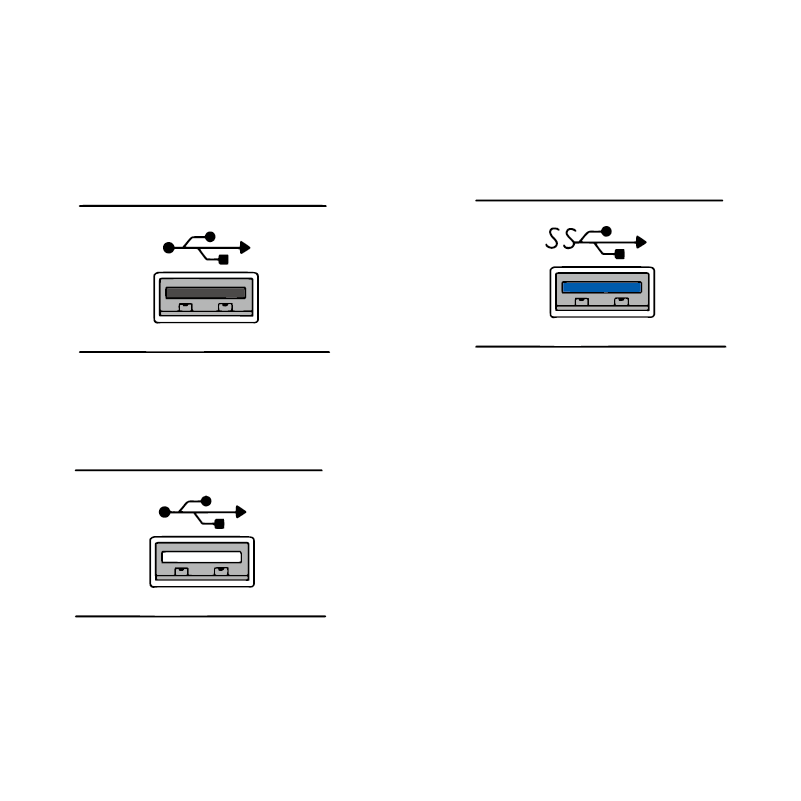USB は 1990 年代から利用されている端子で、近年も改良が続いているため、かなり多くの種類があります。
これらは バージョン と 端子の形 の 2 つの観点から分類できます。
特に近年は規格がどんどん複雑になっているので、すべての規格を正確に理解する必要はありません。大まかに以下のような認識をしていれば大丈夫です。
バージョンで見る USB
USB は大きく分けて 4 世代あり、通信速度が異なります。
互換性があるため、新しい世代のものを古い世代のものに接続して使うことができます。ただし、速度は古いものになります。
たとえば、 USB 2.0 の端子しかない古いパソコンに USB 3.0 に対応したケーブルやデバイスを接続した場合、USB 2.0 の速度で通信が行われます。
USB 1.0 / USB 1.1
1990 年代に発表された最も古いバージョンです。通信速度は 12 Mbpsです。
USB 2.0
2000 年に発表されたバージョンで、USB 1.1 よりも高速な通信（480 Mbps）ができるようになりました。
現在でもよく見かけます。
端子の色は白や黒になっていることが多いようです。
USB 3.0
USB 3.0 は 2008 年に発表されました。USB 2.0 よりも更に高速な通信（最大 5 Gbps）ができるようになりました。
区別のために端子やケーブルが 青くなっている ことがあります（黒いものもあります）。
また、端子やケーブルに SS（Super Speed、スーパースピードの略）と記載されていることもあります。
その後も USB 3.1 や USB 3.2 といった拡張がなされ、高速化がどんどん進んでいます。
USB4
2019 年に発表された規格です。さらに高速で通信できるとされています。
規格が発表されたばかりなので、USB4 に対応したデバイスが登場するのはもう少し先になるでしょう。
端子の形状で見る USB
バージョンだけでなく、端子の形状も種類があります。
ここでは主要な端子について見てみましょう。
USB Type-A（タイプA）
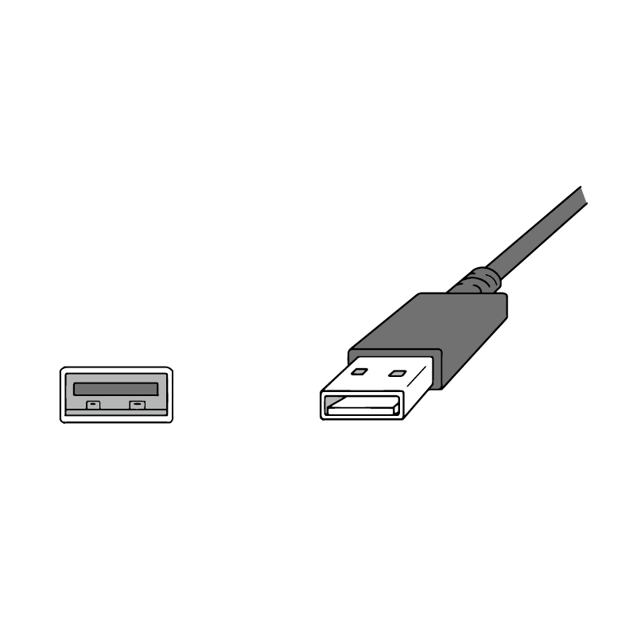USB の中では最も基本的な端子です。裏表が分かりづらい事に要注意です。
USB-A と書かれることもあります。
USB Type-B（タイプB）
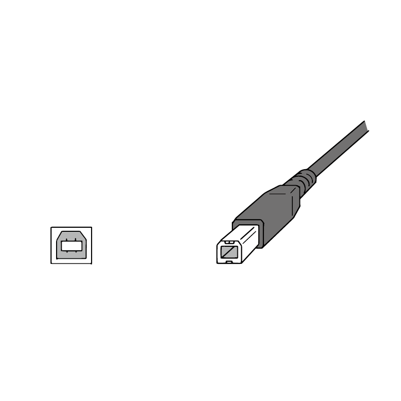USBの中では比較的大型の端子です。プリンターなど大型の機器で使われます。
USB-B と書かれることもあります。
USB Type-C（タイプC）
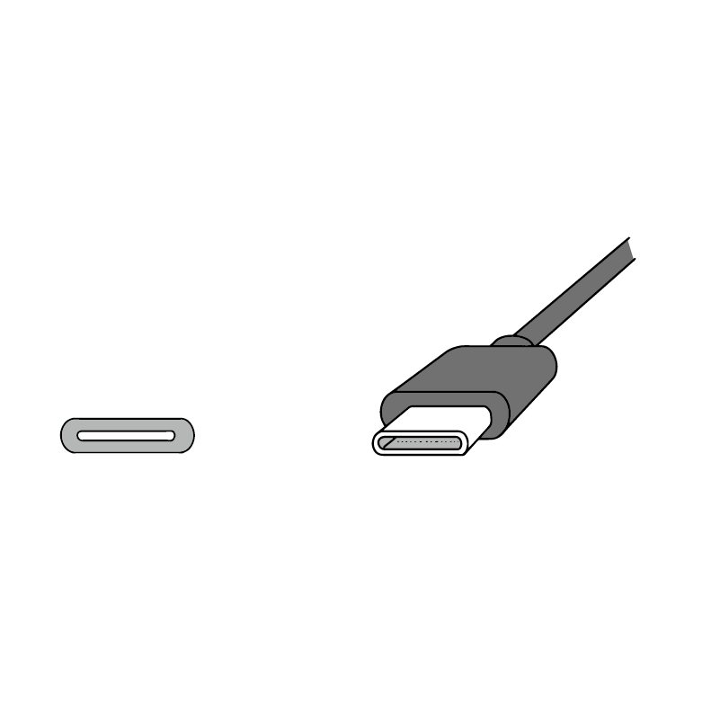スマホなどでも採用されている端子で、裏表どちらでも差し込めるのがメリットです。
USB-C と書かれることもあります。
micro USB（マイクロUSB、 micro-B）
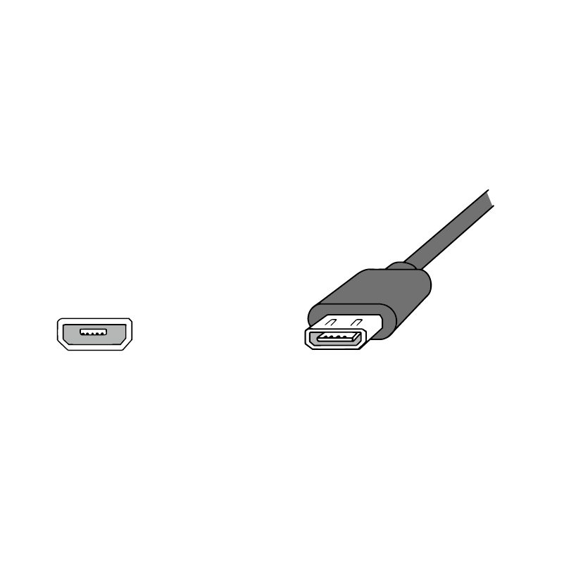スマホや小型のデバイスなどでよく採用されています。
近年は USB Type-C に切り替わりつつあり、今後は数を減らしていくでしょう。
参考: mini USB（ミニ USB、 mini-B）
最近は見かけなくなりましたが、これも小型の端子です。micro USB より少し大きめのサイズです。
古いデバイスなどで使われていることがあります。
実際の USB ケーブルを見てみよう
上記の分類を学んだら、実際に USB ケーブルや端子を見てみましょう。
もし手元に実際の USB ケーブルがあるならそれを見ても良いですし、Amazon などのネット通販サイトで「USB ケーブル」と検索して説明を読んでみてもよいでしょう。
たとえば、以下の製品には「USB-C & USB-A 3.0 ケーブル」と書いてあります。
片方の端子が USB Type-C で、もう片方の端子が USB Type-A の USB 3.0 に対応したケーブルだということが分かります。
//TODO 具体的な製品を示したいわけではなく、例示なのでイラレでモックを作る //https://www.amazon.co.jp/dp/B071D8THD2/
USB の変換
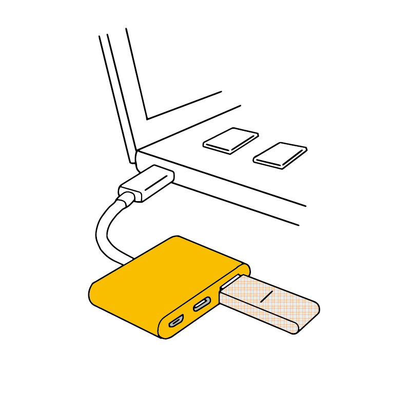USB ケーブルは変換できます。端子の形は違っても同じ信号をやり取りしているためです。変換するための装置を「変換アダプタ」といいます。
たとえば、Type-A と Type-C の変換コネクタを買えば、Type-C の端子しかないパソコンに Type-A のケーブルを差し込むことができます。
ただし、差し込むことができるからといって必ず動作するわけではない事に注意が必要です。
たとえば、スマホの USB Type-C 端子に USB Type-A 変換アダプタを使って、パソコン専用のデバイスを接続しても動作しない場合があります。
ドライバ
ドライバとは、デバイスをパソコンに認識させるための特殊なアプリのようなものです。
近年はデバイスが接続された際に Windows や macOS などの OS がドライバを自動的に探してくれる事が多くなっており、パソコンの利用者がドライバを意識しないといけない場面は減っています。
しかし、特殊なデバイスなどを使用するときは OS が探しきれず、ドライバを手動でインストールする必要が出てくることもあります。そのような場合はデバイスの説明書や Web サイトなどを参考に、自分でインストールしてみましょう。